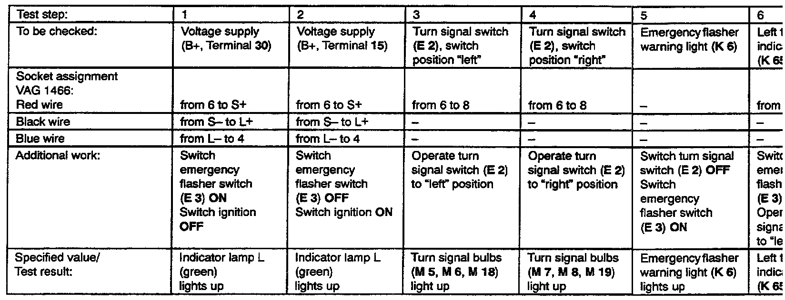
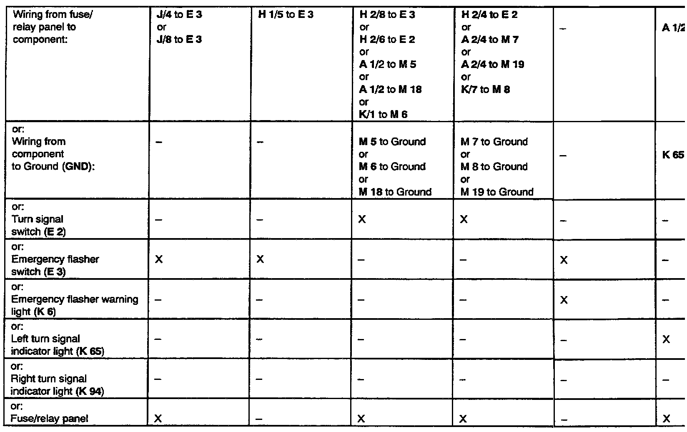

Turn Signals: Testing and Inspection
Use tester VAG 1466 when troubleshooting turn signal and emergency flasher system!
Test conditions:
- Fuse No. 17 OK!
- Turn signal bulbs OK!
Troubleshooting preparations:
- Remove emergency flasher relay (J 2), stamped with production control number 21, from relay position 6.
- Insert test adaptor VAG 1466/3 into relay position 6.
- Connect VAG 1466 to test adaptor.
Test procedure information:
- Perform test steps according to table.
- If specified value/test result is obtained, continue troubleshooting with next test step (test result OK).
- If specified value/test result is not obtained, locate and eliminate malfunction using table.
- Use valid wiring diagram for checking wiring.
- Remove all test wires from sockets of VAG 1466 after each test step.
IF MALFUNCTION HAS NOT BEEN ELIMINATED AFTER PERFORMING TEST STEPS 1 THROUGH 7, REPLACE EMERGENCY FLASHER RELAY (J 2)!
After repairing malfunction, check turn signal and emergency flasher system for proper operation.
o�pU:

Possible causes if specified value/test result is not obtained:
��pU:
